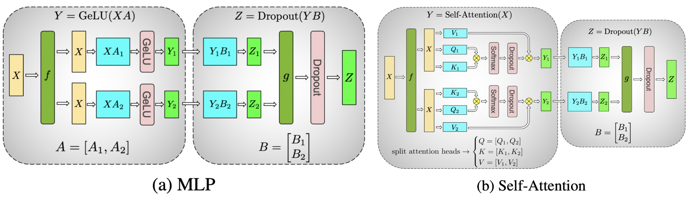
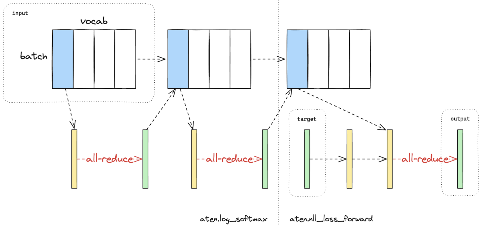
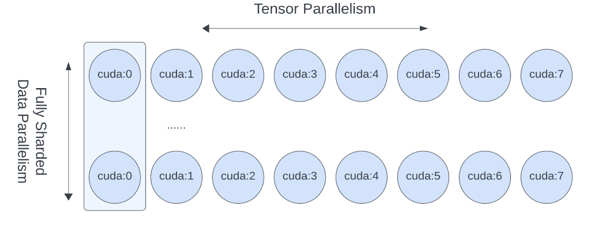

大规模 Transformer 模型使用 Tensor Parallel（TP）训练
创建于：2025 年 4 月 1 日 | 最后更新：2025 年 4 月 1 日 | 最后验证：2024 年 11 月 5 日
作者：梁万超，刘天宇
备注
在 github 上查看和编辑此教程。
本教程演示了如何使用张量并行和完全分片数据并行在数百到数千个 GPU 上训练大型类似 Transformer 的模型。
前提条件：
已安装 PyTorch 2.3.0 或更高版本，并支持 CUDA/Linux
Tensor Parallel 是如何工作的？
张量并行（TP）最初在 Megatron-LM 论文中提出，是一种高效的模型并行技术，用于训练大规模 Transformer 模型。本教程中提到的序列并行（SP）是张量并行的一种变体，它在序列维度上进行分片，以进一步节省训练过程中的激活内存。随着模型变得越来越大，激活内存成为瓶颈，因此在张量并行训练中，通常将序列并行应用于第②③层。
{kind=link}

图 1 展示了 Transformer 模型 MLP 和 Self-Attention 层在 Tensor Parallel 风格下的分片，其中注意力/MLP 中的矩阵乘法都通过分片计算完成（图片来源）
从宏观上看，PyTorch Tensor Parallel 的工作原理如下：
分片初始化
确定要应用于每个层的
ParallelStyle，并通过调用parallelize_module对初始化的模块进行分片。并行模块的模型参数将被转换为 DTensor，DTensor 将负责使用分片计算运行并行模块。
运行时正向/反向传播
根据用户为每个
ParallelStyle指定的输入/输出 DTensor 布局，将运行适当的通信操作以转换输入/输出的 DTensor 布局（例如allreduce、allgather和reduce_scatter）。为并行层运行分片计算以节省计算/内存（例如，
nn.Linear、nn.Embedding）。
何时以及为何应用张量并行
PyTorch 完全分片数据并行（FSDP）已经具备了将模型训练扩展到特定数量 GPU 的能力。然而，当涉及到进一步扩展模型训练的规模，无论是模型大小还是 GPU 数量时，许多额外的挑战就会出现，这可能会需要结合张量并行与 FSDP。
随着世界大小（GPU 数量）变得过大（超过 128/256 GPU），FSDP 集体操作（如
allgather）正被环延迟所主导。通过在 FSDP 之上实现 TP/SP，可以将 FSDP 的世界大小减少 8 倍，通过仅将 FSDP 应用于跨主机通信，从而减少相同的延迟成本。达到数据并行的极限，由于收敛性和 GPU 内存限制，无法将全局批次大小提升到超过 GPU 数量的水平，张量/序列并行是唯一已知的“估算”全局批次大小并继续使用更多 GPU 进行扩展的方法。这意味着模型大小和 GPU 数量可以继续扩展。
对于某些类型的模型，当本地批量大小变小时，TP/SP 可以产生更优化于浮点运算（FLOPS）的矩阵乘法形状。
那么，在预训练时，达到这些限制有多容易？截至目前，使用数千个 GPU 进行预训练大型语言模型（LLM）包含数十亿或数千亿个标记可能需要数月时间。
在大规模训练LLM时，总会遇到限制 1。例如，使用 2k 个 GPU 训练了 35 天的 Llama 2 70B，需要在 2k 规模上进行多维并行。
当 Transformer 模型变得更大（如 Llama2 70B）时，它也会迅速遇到限制 2。由于内存和收敛限制，即使使用本地
batch_size=1也无法单独使用 FSDP。例如，Llama 2 的全局批量大小为 1K，因此在 2K 个 GPU 上仅使用数据并行是不够的。
如何应用张量并行
PyTorch 张量并行 API 提供了一套模块级别的原语（ ParallelStyle ），用于配置模型中每个单独层的分片，包括：
ColwiseParallel和RowwiseParallel：以列或行的方式分片nn.Linear和nn.Embedding。SequenceParallel：在nn.LayerNorm、nn.Dropout、RMSNormPython等上执行分片计算。使用
PrepareModuleInput和PrepareModuleOutput配置模块输入/输出分片布局以及适当的通信操作。
为了演示如何使用 PyTorch 原生的 Tensor Parallel API，让我们来看一个常见的 Transformer 模型。在本教程中，我们以最新的 Llama2 模型作为参考 Transformer 模型实现，因为它在社区中也得到了广泛的应用。
由于 Tensor Parallel 将单个张量分片到一组设备上，我们首先需要设置分布式环境（如 NCCL 通信器）。Tensor Parallelism 是一种类似于 PyTorch DDP/FSDP 的单程序多数据（SPMD）分片算法，它底层利用 PyTorch DTensor 进行分片。它还利用 DeviceMesh 抽象（底层管理 ProcessGroups）进行设备管理和分片。要了解如何利用 DeviceMesh 设置多维并行性，请参阅本教程。Tensor Parallel 通常在单个主机内部工作，因此我们首先初始化一个连接主机内 8 个 GPU 的 DeviceMesh。
from torch.distributed.device_mesh import init_device_mesh
tp_mesh = init_device_mesh("cuda", (8,))
现在我们已经初始化了 DeviceMesh，让我们详细了解一下 Llama 2 模型架构，并看看我们应该如何执行 Tensor Parallel 分片。在这里，我们关注核心 TransformerBlock ，其中 Transformer 模型堆叠相同的 TransformerBlock 来扩展模型。
核心的 TransformerBlock 由一个 Attention 层和一个 FeedForward 层组成。让我们首先看看更简单的 FeedForward 层。对于 FeedForward 层，它由三个线性层组成，执行 SwiGLU 风格的 MLP，看看它的前向函数：
# forward in the FeedForward layer
def forward(self, x):
return self.w2(F.silu(self.w1(x)) * self.w3(x))
它同时执行 w1 和 w3 矩阵乘法，然后是 w2 矩阵乘法，将 w1/w3 线性投影结果的组合结果。这意味着我们可以使用 Tensor Parallelism 论文中的想法，以列向量的方式分片 w1/w3 线性层，以行向量的方式分片 w2 线性层，这样在所有三个层结束时，只有一个 allreduce 通信发生。使用 PyTorch 原生的 Tensor Parallel，我们可以简单地像下面这样为 FeedForward 层创建一个 parallelize_plan ：
from torch.distributed.tensor.parallel import ColwiseParallel, RowwiseParallel, parallelize_module
layer_tp_plan = {
# by default ColwiseParallel input layouts is replicated
# and RowwiseParallel output layouts is replicated
"feed_foward.w1": ColwiseParallel(),
"feed_forward.w2": RowwiseParallel(),
"feed_forward.w3": ColwiseParallel(),
}
这就是使用 PyTorch Tensor Parallel API 配置 FeedForward 层分片的方法。请注意，用户只需指定如何分片单个层和通信（例如， allreduce ），而通信将在底层自动完成。
接下来是 Attention 层。它由 wq 、 wk 、 wv 线性层组成，用于将输入投影到 q / k / v ，然后使用 wo 线性层执行注意力和输出投影。在这里，Tensor Parallelism 旨在对 q/k/v 投影进行列分片，对 wo 线性投影进行行分片。因此，我们可以将注意力计划添加到我们刚刚起草的 tp_plan 中：
layer_tp_plan = {
# by default ColwiseParallel input layouts is replicated
# and RowwiseParallel output layouts is replicated
"attention.wq": ColwiseParallel(),
"attention.wk": ColwiseParallel(),
"attention.wv": ColwiseParallel(),
"attention.wo": RowwiseParallel(),
"feed_forward.w1": ColwiseParallel(),
"feed_forward.w2": RowwiseParallel(),
"feed_forward.w3": ColwiseParallel(),
}
这几乎是我们需要应用 Tensor Parallelism 到 TransformerBlock 的 layer_tp_plan 。然而，我们应该注意的一点是，当对线性层进行列分片时，线性层的输出将分片在最后一个张量维度上，而行分片的线性层直接接受最后一个维度分片的输入。如果在列线性层和行线性层之间有任何更多的张量操作（例如视图操作），我们需要调整相关的形状相关操作以匹配分片形状。
对于 Llama 模型，在注意力层中存在一些与形状相关的视图操作。特别是，对于 wq / wk / wv 线性层的列并行，激活张量在 num_heads 维度上进行分片，因此我们需要调整 num_heads 到本地 num_heads 。
最后，我们需要调用 parallelize_module API 来为每个 TransformerBlock 制定计划。在底层，它将模型参数分布到 Attention 和 FeedForward 层中的 DTensors，并在必要时为模型输入和输出（在每个模块前后分别）注册通信钩子：
for layer_id, transformer_block in enumerate(model.layers):
layer_tp_plan = {...} # i.e. the plan we just generated
# Adjust attention module to use the local number of heads
attn_layer = transformer_block.attention
attn_layer.n_heads = attn_layer.n_heads // tp_mesh.size()
attn_layer.n_kv_heads = attn_layer.n_kv_heads // tp_mesh.size()
parallelize_module(
module=transformer_block,
device_mesh=tp_mesh,
parallelize_plan=layer_tp_plan,
)
现在我们已经详细阐述了每个 TransformerBlock 的分片计划，通常在第一层有一个 nn.Embedding ，以及一个最终的 nn.Linear 投影层，用户可以选择将第一 nn.Embedding 的行或列分片，以及将最后的 nn.Linear 投影层进行列分片，并指定适当的输入和输出布局。以下是一个示例：
model = parallelize_module(
model,
tp_mesh,
{
"tok_embeddings": RowwiseParallel(
input_layouts=Replicate(),
),
"output": ColwiseParallel(
output_layouts=Replicate(),
),
}
)
备注
如果要划分的模型太大而无法适应 CPU 内存，可以选择使用 meta 设备初始化（例如，首先在元设备上初始化模型，划分层，然后实例化模型），或者在 Transformer 模型初始化过程中逐层并行化 TransformerBlock 层。
应用序列并行到 LayerNorm/RMSNorm 层
序列并行建立在上述张量并行之上。与基本的张量并行相比，后者仅在 Attention 模块和 FeedForward 模块内划分张量，并保持它们的模块输入和输出（即在正向传递中的激活和在反向传递中的梯度）复制，序列并行则保持它们在序列维度上划分。
在典型的 TransformerBlock 中，正向函数结合了归一化层（ LayerNorm 或 RMSNorm ）、注意力层、前馈层和残差连接。例如：
# forward in a TransformerBlock
def forward(self, x):
h = x + self.attention(self.attention_norm(x))
out = h + self.feed_forward(self.ffn_norm(h))
return out
在大多数使用场景中，激活（以及梯度）的形状是 [batch size, sequence length, hidden dimension] 在 Attention 和 FeedForward 模块之外。在 DTensor 的语言中，序列并行使用 Shard(1) 布局对模块的前向/反向进行激活计算。根据前面的代码示例，下面的代码演示了如何将序列并行应用于 TransformerBlock 中的归一化层。
首先，让我们导入序列并行所需的依赖项：
from torch.distributed.tensor.parallel import (
PrepareModuleInput,
SequenceParallel,
)
接下来，让我们调整 layer_tp_plan 以启用 RMSNorm 层的序列并行：
layer_tp_plan = {
# Now the input and output of SequenceParallel has Shard(1) layouts,
# to represent the input/output tensors sharded on the sequence dimension
"attention_norm": SequenceParallel(),
"attention": PrepareModuleInput(
input_layouts=(Shard(1),),
desired_input_layouts=(Replicate(),),
),
"attention.wq": ColwiseParallel(),
"attention.wk": ColwiseParallel(),
"attention.wv": ColwiseParallel(),
"attention.wo": RowwiseParallel(output_layouts=Shard(1)),
"ffn_norm": SequenceParallel(),
"feed_forward": PrepareModuleInput(
input_layouts=(Shard(1),),
desired_input_layouts=(Replicate(),),
),
"feed_forward.w1": ColwiseParallel(),
"feed_forward.w2": RowwiseParallel(output_layouts=Shard(1)),
"feed_forward.w3": ColwiseParallel(),
}
现在我们可以看到，我们使用 PrepareModuleInput 来修改模块输入布局，将注意力层和前馈层的 Shard(1) 到 Replicate() 的布局修改为 Shard(1) 。就像张量并行一样，只需要指定输入和输出的张量划分布局，层之间的通信将自动发生。
注意，在序列并行中，我们假设 TransformerBlock 的输入和输出总是在序列维度上分片，以便多个 TransformerBlocks 可以无缝连接。这可以通过显式指定起始 nn.Embedding 层的输出和最终 nn.Linear 投影层的输入为 Shard(1) 来实现：
model = parallelize_module(
model,
tp_mesh,
{
"tok_embeddings": RowwiseParallel(
input_layouts=Replicate(),
output_layouts=Shard(1),
),
"norm": SequenceParallel(),
"output": ColwiseParallel(
input_layouts=Shard(1),
output_layouts=Replicate()
),
}
)
应用损失并行
损失并行是一种相关技术，可以在计算损失函数时节省内存和通信，因为模型输出通常非常大。在损失并行中，当模型输出在（通常是巨大的）词汇维度上分片时，交叉熵损失可以有效地计算，而无需将所有模型输出收集到每个 GPU 上。这不仅显著降低了内存消耗，还通过减少通信开销和在并行中进行分片计算来提高训练速度。下面的图片简要说明了损失并行如何通过进行分片计算来避免将所有模型输出收集到每个 GPU 上。
{kind=link}

图 2. 在单个 GPU 上并行计算交叉熵损失，蓝色代表分片张量；绿色代表复制张量；黄色代表部分值张量（待全归约）。黑色箭头表示本地计算；红色箭头表示 GPU 之间的功能集体操作。¶
在 PyTorch Tensor Parallel API 中，可以通过上下文管理器 loss_parallel 启用损失并行，使用户可以直接使用 torch.nn.functional.cross_entropy 或 torch.nn.CrossEntropyLoss ，而无需修改代码的其他部分。
要应用损失并行，模型预测，通常形状为 [batch size, sequence length, vocabulary size] ，应在词汇维度上进行分片。这可以通过标记最后一个线性投影层输出的输出布局轻松完成：
model = parallelize_module(
model,
tp_mesh,
{
"tok_embeddings": RowwiseParallel(
input_layouts=Replicate(),
output_layouts=Shard(1),
),
"norm": SequenceParallel(),
"output": ColwiseParallel(
input_layouts=Shard(1),
# use DTensor as the output
use_local_output=False,
),
},
)
在上述代码中，我们还在输出之前的归一化层上应用了序列并行。我们应用 use_local_output=False 以使输出保持为 DTensor，以便与 loss_parallel 上下文管理器一起工作。之后，可以简单地调用交叉熵损失函数，如下所示。请注意，反向计算也需要在上下文中发生。
import torch.nn.functional as F
from torch.distributed.tensor.parallel import loss_parallel
pred = model(input_ids)
with loss_parallel():
# assuming pred and labels are of the shape [batch, seq, vocab]
loss = F.cross_entropy(pred.flatten(0, 1), labels.flatten(0, 1))
loss.backward()
将张量并行与全分片数据并行结合使用 ¶
现在我们已经展示了如何将 Tensor/Sequence Parallel 应用于模型，让我们也来看看 Tensor Parallel 和完全分片数据并行如何协同工作。由于 Tensor Parallelism 会引入阻塞计算的通信，我们想要确保它在快速通信通道中运行，例如 NVLink。在实践中，我们通常在每个主机内部应用 Tensor Parallel，并在主机之间应用完全分片数据并行。
{kind=link}

图 3. FSDP 和 TP 在独立的设备维度上工作，FSDP 通信发生在主机间，TP 通信发生在主机内。¶
这种二维并行模式可以通过二维 DeviceMesh 轻松表达，我们只需要将每个“子”DeviceMesh 传递给每个单独的并行 API：
from torch.distributed.device_mesh import init_device_mesh
from torch.distributed.tensor.parallel import ColwiseParallel, RowwiseParallel, parallelize_module
from torch.distributed.fsdp import FullyShardedDataParallel as FSDP
# i.e. 2-D mesh is [dp, tp], training on 64 GPUs that performs 8 way DP and 8 way TP
mesh_2d = init_device_mesh("cuda", (8, 8))
tp_mesh = mesh_2d["tp"] # a submesh that connects intra-host devices
dp_mesh = mesh_2d["dp"] # a submesh that connects inter-host devices
model = Model(...)
tp_plan = {...}
# apply Tensor Parallel intra-host on tp_mesh
model_tp = parallelize_module(model, tp_mesh, tp_plan)
# apply FSDP inter-host on dp_mesh
model_2d = FSDP(model_tp, device_mesh=dp_mesh, use_orig_params=True, ...)
这将使我们能够轻松地在每个主机（主机内）应用张量并行，并在主机之间（主机间）应用 FSDP，而对 Llama 模型无需进行任何代码更改。张量（模型）并行和数据并行技术的结合提供了使用大量 GPU 继续增加模型大小和高效训练的能力。
结论 ¶
本教程演示了如何使用张量并行和完全分片数据并行在数百到数千个 GPU 上训练大型类似 Transformer 的模型。它解释了如何将张量并行应用于模型的各个部分，而无需对模型本身进行任何代码更改。张量并行是一种高效的大规模训练模型并行技术。
要查看本教程中完整端到端代码示例的说明，请参阅 pytorch/examples 存储库中的张量并行示例。